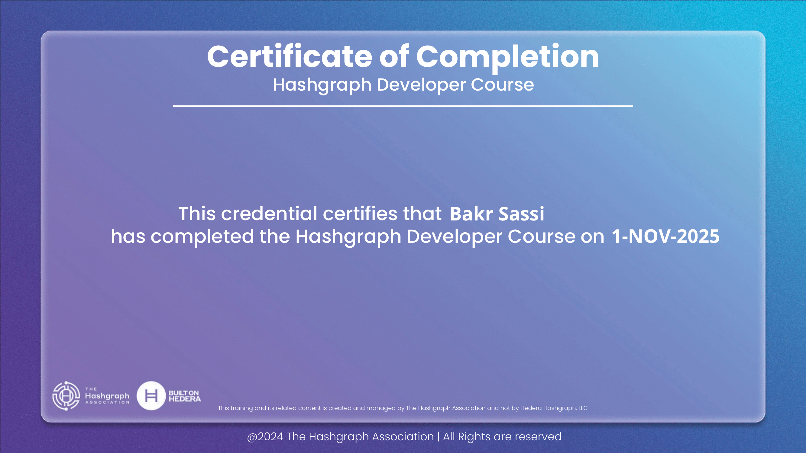
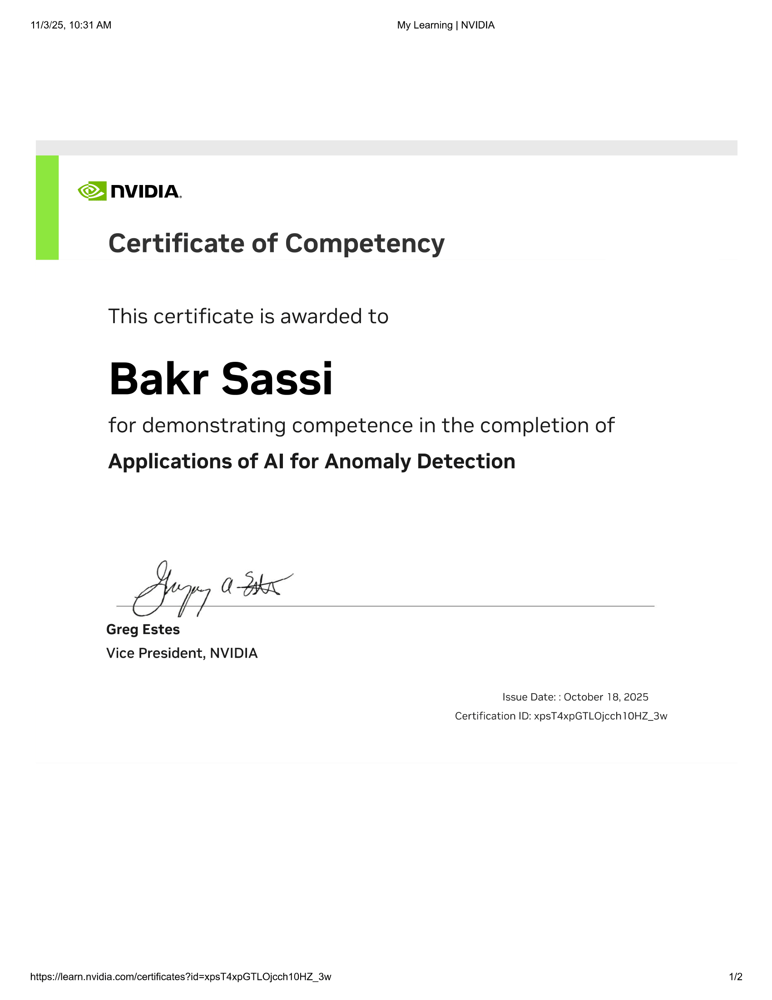

Fondation Académique
Formation & Certifications
Développer l'expertise grâce à une formation académique rigoureuse et un développement professionnel continu
Diplômes Universitaires
Licence en Business Computing
2023 - 2026Esprit School of Business, Tunisie
- Spécialisation : Business Information Systems
- Cours Pertinents : Gestion de Bases de Données, Analyse de Données, Développement Web Full-Stack, Intelligence Artificielle, Blockchain & Cybersécurité, Modélisation de Processus Métier
Baccalauréat - Sciences Expérimentales
2018 - 2022Lycée Oued Ellil, Tunisie
- Formation scientifique rigoureuse
- Base solide en mathématiques et sciences
Certifications Professionnelles
Survolez pour voir les certificats
Leadership & Communication

Certificat vérifié
Gamification

Certificat vérifié
Time and project management

Certificat vérifié
Remerciement 2023

Certificat vérifié
Remerciement 2024

Certificat vérifié
Digital content lab

Certificat vérifié
1er prix BDP

Certificat vérifié
Attendance Hashgraph Developer

Certificat vérifié
Applications of AI for Anomaly Detection

Certificat vérifié